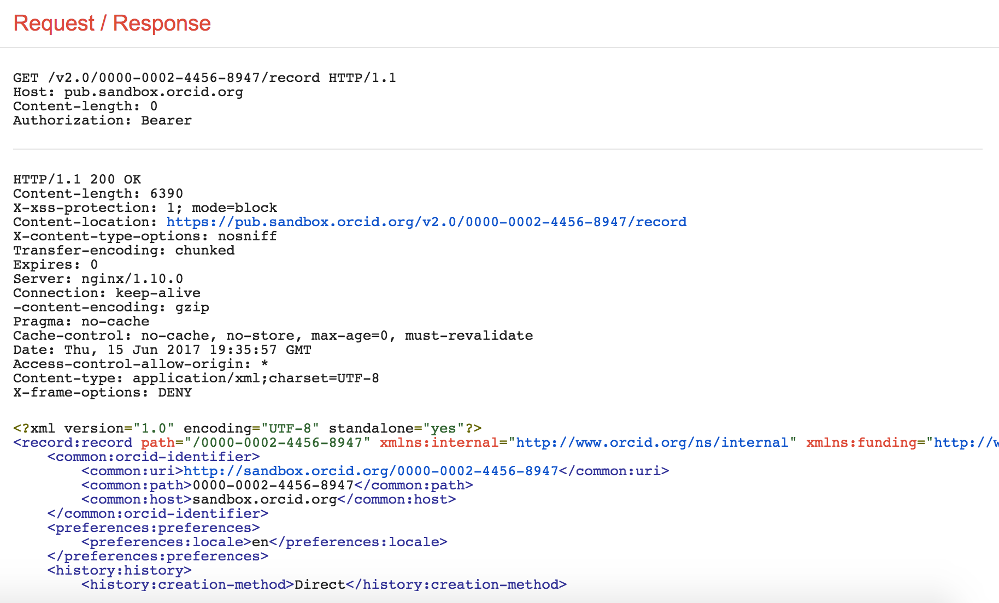

4. Search public info
In addition to reading information on a specific ORCID record, you can use the API to search for ORCID records that contain specific information.
In this section, we'll try searches using just a few of the available fields. For a full list of fields that you can search, see our Basic tutorial: Searching Data using the ORCID API
Search for records with an institutional affiliation
- In a new window or tab, visit https://developers.google.com/oauthplayground
- On the left side of the screen, click Step 3 Configure request to API
- In the Request URI field enter:
https://pub.sandbox.orcid.org/v2.0/search/?q=affiliation-org-name:%22Boston%20University%22
*Optional:

- Click Send the request
- The total number of matching ORCID iDs and a list of those iDs will appear Request/Response section

Paging search results
If your search matches more than 100 ORCID iDs, only the first 100 iDs will be returned in the list of results. To get the next set of results, you'll need to make another API request.
- On the left side of the screen, click Step 3 Configure request to API
- In the Request URI field enter:
https://pub.sandbox.orcid.org/v2.0/search/?q=affiliation-org-name:%22Boston%20University%22&start=101&rows=200 - Click Send the request
- The total number of matching ORCID iDs and a list of iDs 101-301 will appear in the Request/Response section
To get the entire set of results, repeat the query in step 2, changing start= until you've reached collected all of your results.